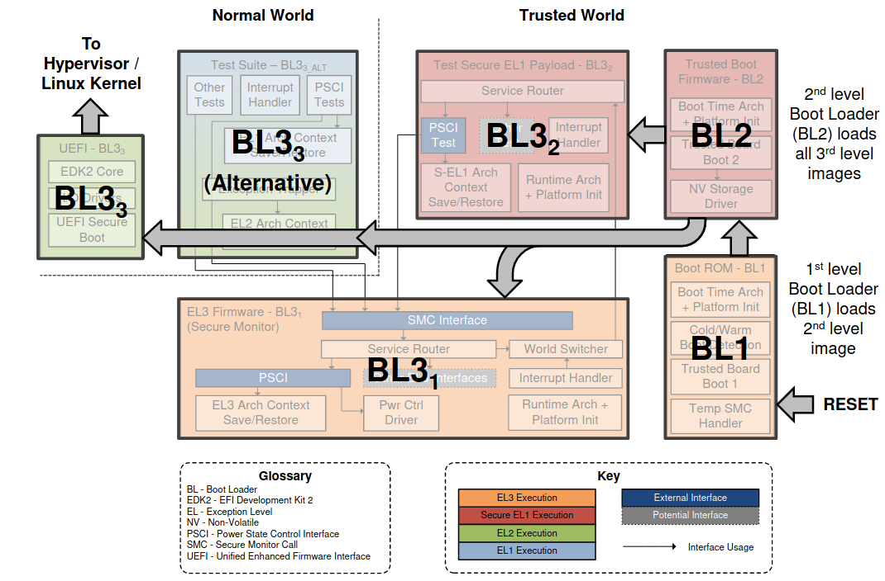

ARM Trusted Firmware¶
Introduction¶
see also TrustZone (aka ARM Security Extension) for a overview about ATF
a reference implementation of secure world software for Armv7-A and Armv8-A, leveraging ARM TrustZone support
includes a Secure Monitor executing at Exception Level 3 (EL3)
implements various ARM interface standards
The Power State Coordination Interface (PSCI)
Trusted Board Boot Requirements CLIENT (TBBR-CLIENT)
SMC Calling Convention
System Control and Management Interface (SCMI)
Software Delegated Exception Interface (SDEI)
PSA FW update specification
Background: Trusted Execution Environment (TEE)¶
secure area of a main processor
architecture
a hardware isolation mechanism
a secure operating system running on top of that isolation mechanism
features
confidentiality
integrity
data integrity: prevent unauthorized access from outside TEE
code integrity: prevent code inside TEE from being replaced/modified by unauthorized entities
hardware
hardware-based memory encryption ???
standardization
GlobalPlatform: https://globalplatform.org/specs-library/?filter-committee=tee
vendors
ARM
TrustZone
Samsung Knox
Realm Management Extension/Confidential Compute Architecture (CCA)
AMD
Platform Security Processor (PSP) -> licensed ARM TrustZone
AMD Secure Encrypted Virtualization, and Secure Nested Paging extension
Intel
Software Guard Extensions (SGX)
RISC-V
MultiZone Security Trusted Execution Environment
Keystone Customizable TEE Framework
Penglai Scalable TEE for RISC-V
ARM TrustZone¶
a system-wide hardware isolation mechanism
secure world
monitor
secure OS
trusted applications (trustlet)
normal world
rich OS + TrustZone drivers
applications
partitioning of all the SoC’s hardware and software resources
Linaro Trusted Firmware Project¶
https://www.trustedfirmware.org/
Secure Operating System (OS)¶
Architecture¶
small OS kernel
a (Linux) kernel driver to transfer data between the secure environment and the Rich OS
a userspace library to communicate with trusted applications (secure tasks/services) via the kernel driver
Workflow¶
transition from the Secure World to the Non-Secure World via a dedicated instruction -> Secure Monitor Call (SMC)
the CPU will enter in monitor mode and will have access to all hardware, including the protected peripherals and memory regions
now, the TEE firmware/operating system can be executed
Examples¶
OP-TEE
implements the TEE Internal Core API v1.1.x (the API exposed to Trusted Applications)
implements the TEE Client API v1.0 (the API describing how to communicate with a TEE)
supports Arm Firmware Framework for Arm A-profile (FF-A), which is a new way of communication between normal world and secure world
https://www.linaro.org/blog/op-tee-and-the-need-for-ff-a/
Android Trusty OS
based on Little Kernel (LK)
https://source.android.com/docs/security/features/trusty
https://source.android.com/docs/core/architecture/partitions/tos-partitions
Architecture¶
The following table clusters the different boot loader stages:

Boot Flow¶

The following table describes the tasks of each dedicated boot loader stage:
Boot Loader Stage |
Task |
Services |
|---|---|---|
BL1 |
||
BL2 |
||
BL31 |
- Interfaces |
|
BL32 |
||
BL33 |
Components¶
TODO
Services¶
Services are accessed via SMC instruction, from exception levels below EL3. They
follow SMC Calling Convention
use SMC function IDs that fall in the SiP range
The following services are provided by BL31:
Power Management
Power State Coordination Interface (PSCI) Runtime Service
transported by SMC calls
used for
CPU hotplug (on/off)
CPU idle (suspend/resume)
system shutdown and reset
System Control and Management Interface (SCMI) driver
requires a conforming power controller → ARM System Control Processors (SCP)
allows to delegate power management to SCP
Exception Handling
Software Delegated Exception Interface (SDEI)
SDEI Dispatcher
delivers extraordinary system events (either normal or critical priority)
OS/hypervisor register system event callback
platform error handling
Reliability, Availability, and Serviceability (RAS) extensions (https://en.wikipedia.org/wiki/Reliability,_availability_and_serviceability)
a mandatory extension for the Armv8.2 architecture and later
an optional extension to the base Armv8 architecture
…
TODO: ARM general → align with others
ARM SiP (Silicon Provider) services: non-standard, platform-specific services offered by the silicon implementer or platform provider
Performance Measurement Framework (PMF)
a caller can retrieve timestamps captured at various paths in TF-A execution
Execution State Switching service
lower exception level (EL2 or NS EL1) may request to switch execution state (AArch64 <-> AArch32)
only available if ATF is built for AArch64
DebugFS interface
aimed at exposing firmware debug data to higher SW layers such as a non-secure component
Exception Handling Framework (EHF)
takes care of the following exceptions
Interrupts
Synchronous External Aborts
Asynchronous External Aborts
TODO: Nvidia specific → align with others
NVIDIA Generic interface (NVG)
Machine Check Architecture (MCA): https://en.wikipedia.org/wiki/Machine_Check_Architecture
Machine Check Exception (MCE): https://en.wikipedia.org/wiki/Machine-check_exception
firmware is in charge of CPUs power state transitions
Tegra MCE Abstract Request Interface (ARI) driver manages all NVG requests to MCE firmware running in the background
communicate with MCE firmware on CPU state configurations and (power) state transition requests from the CPU idle driver
Interfaces¶
SMC Calling Convention (SMCC)
Secure Monitor Call (SMC)
Platform Security Architecture Firmware Framework for ARM A-profile (PSA FF-A)
standards
FF-A 1.0
FF-A 1.1
standard set of interfaces between Secure Partitions (SP) and Secure Partition Manager (SPM)
Secure Partitions (SP): mutually distrustful software sandboxes running in the secure world, e.g. a Trusted OS besides a platform secure services
Secure Partition Manager (SPM)
for systems implementing ARMv8.4-A Secure-EL2 extension
enables multiple, isolated Secure Partitions (SPs) to run at Secure-EL1
initializes SPs at boot time & enables communication between service requestors and providers
implementation
S-EL1 (e.g. part of OP-TEE)
S-EL2 (in a secure hypervisor), e.g. Hafnium as reference Secure EL2 SPM
EL3
OP-TEE Secure Partition Manager Core (SPMC) integrated with the Secure Partition Manager Dispatcher (SPMD)
between SPs and normal world
Workflow¶
BL31¶
BL1 passes control to BL31 at BL31_BASE
checking boot type
cold boot -> BL31 stage only executed by primary CPU
warm boot -> BL31 executed by all CPUs
re-initialize all architectural and platform state (despite BL1 already had performed some initialization before)
receive bl31_params provided by BL2
initialize a UART (PL011 console), which enables access to the printf family of functions in BL31
enable issuing of snoop and DVM (Distributed Virtual Memory) requests to the CCI slave interface corresponding to the cluster that includes the primary CPU
enable Memory Management Unit (MMU) within each BL stage
platform-specific architecture setup function -> blX_plat_arch_setup()
setting up translation tables -> reuse memory translation library (lib/xlat_tables)
…
enable instruction and data cache within each BL stage
initialize the GIC
enable secure interrupts in the GIC CPU interface
disable the legacy interrupt bypass mechanism
configure the priority mask register to allow interrupts of all priorities to be signaled to the CPU interface
mark SGIs 8-15 and the other secure interrupts on the platform as secure
target all secure SPIs to CPU0
enable these secure interrupts in the GIC distributor
configure all other interrupts as non-secure
enable signaling of secure interrupts in the GIC distributor
enable system-level implementation of the generic timer counter through the memory mapped interface
grant access to the system counter timer module
initialize the power controller device (in particular, initialise the locks that prevent concurrent accesses to the power controller device)
provide runtime firmware services
a subset of the Power State Coordination Interface (PSCI) API
…
pass control (using the “bl_params” list populated by BL2 in memory)
to a normal world BL image, pre-loaded at a platform-specific address by BL2
optionally to the BL32 image, pre-loaded at a platform-specific address by BL2
Secure Boot¶
ARMv7-A
mostly vendor-specific solutions
TF-A + BL2 secure boot loader
ARMv8-A
TF-A + BL32
Build Process¶
TODO: describe process for Nvidia ATF & Trusty TEE exemplarily
L4T Driver Package (BSP) Sources
ATF (atf_src.tbz2) -> bl31.bin
Trusty (trusty_src.tbz2) -> lk.bin
Generate tos.img / tos_t194.img to be used during flash process
monitor -> bl31.bin
os -> lk.bin
Replace existing tos.img / tos_t194.img in <Linux_for_Tegra>/bootloader/ folder
TODO: steps for customization
modify BL31 (here: ATF)
modify BL32 (here: Trusty TEE)
replace BL32 (here: Trusty TEE) by some other baremetal service (choose a different SPD)
existing ATF sample services
sp_min (for AARCH32): A minimal AArch32 Secure Payload (SP_MIN) to demonstrate PSCI library integration with AArch32 EL3 Runtime Software
https://trustedfirmware-a.readthedocs.io/en/latest/design/firmware-design.html#memory-layout-on-arm-development-platforms
tsp (for AARCH64)
https://trustedfirmware-a.readthedocs.io/en/latest/perf/tsp.html
https://trustedfirmware-a.readthedocs.io/en/latest/components/el3-spmc.html#test-secure-payload-tsp
a custom service → modifying the existing ATF sample services
build and deploy a TEE application
use a predefined Nvidia sample application
create a custom application
https://forums.developer.nvidia.com/t/building-new-trusted-applications-ta-using-trusty-on-jetson-xavier-nx/189624
Documentation¶
https://trustedfirmware-a.readthedocs.io/en/latest/index.html
https://developer.arm.com/Tools%20and%20Software/Trusted%20Firmware-A
https://github.com/ARM-software/arm-trusted-firmware